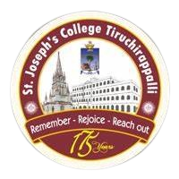
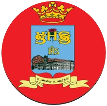

I'm Infant Ryan J. , a final-year Computer Science student at St. Joseph's College (Autonumous) with experience in software development, data structures, and algorithms. I’ve worked on projects like Home Automation and interned at Tamil Info Technology, seeking opportunities to contribute to innovative tech solutions.

Bachelor's degree,computer science
Jun 2022-May 2025
Activities and societies:NCC (AIRWING)

Completed my schooling in SMHSS
and secure a 96 marks in Computer Science
Activities and societies:NCC (Infantry)